PC
| ConsoleSome of the earliest PC games I remember playing.
Games that are already featured on another page are not mentioned here.
Puzzle
Nancy Drew: Curse of Blackmoor Manor
Released: October 5, 2004
Developer: Her Interactive
A point and click mystery game starring amateur detective Nancy Drew. Creepy and unsettling, it has a 'nightmare' scene that absolutely terrified me.
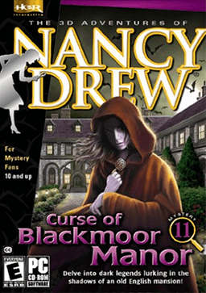
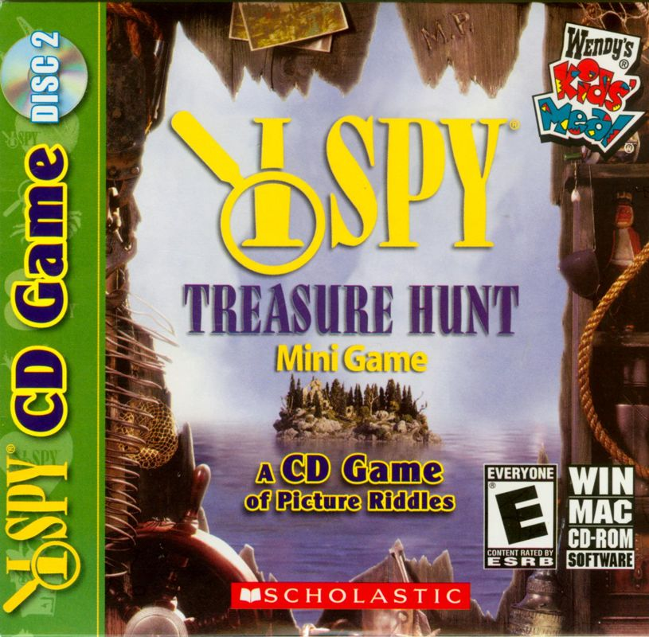
I SPY (series)
Released: 1999
Developer: Black Hammer Productions Inc
Point and click games based on the I Spy book series. I played Spooky Mansion and Treaure Hunt and enjoyed them a lot!
Simulation
Carnivores
Released: 1998
Publisher: WizardWorks
First person shooter & hunting game. Hunt dinosaurs in an open environment and display their trophies. I spent a lot of time looking for this one after I no longer had it as a kid, but I was only able to find Turok. The advent of SEO made finding it much easier.
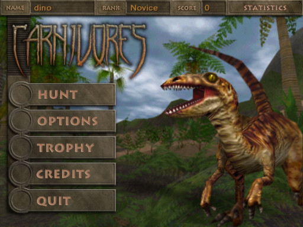
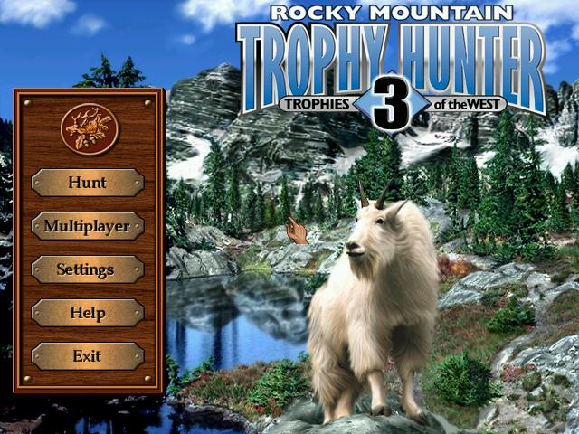
Rocky Mountain Trophy Hunter 3
Released: 2000
Publisher: WizardWorks
Hunting simulation game allowing one to choose their gear and gather trophies. I didn't really 'hunt', I just walked around looking for animals.
SimCity 2000
Released: 1993 (MS-DOS)
Publisher: Maxis
City-building simulator. I was too young to understand how to play, and cleared forests until mass protests broke out in the city within minutes of starting a game.
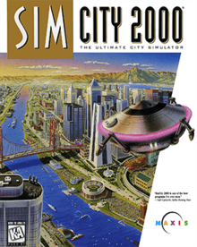
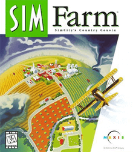
SimFarm
Released: 1993 (MS-DOS)
Publisher: Maxis
Farming simulator. I was too young to understand how to play.
Educational
Vet Emergency 2
Released: March 7, 2003
Developer: Legacy Interactive PC
Interactive simulation featuring photos of real animals.
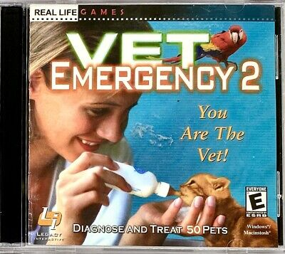
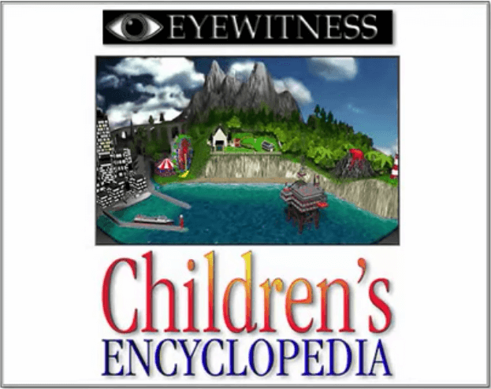
Eyewitness Children's Encyclopedia
Released: 1997
Developer: DK Multimedia
It seems cool, but I remember being confused by the interface.
Humongous Entertainment
Pajama Sam: No Need to Hide When It's Dark Outside
Released: 1998
The first installment of the Pajama Sam series. Wonderfully crafted and lovingly animated, with charming characters and beautiful art.
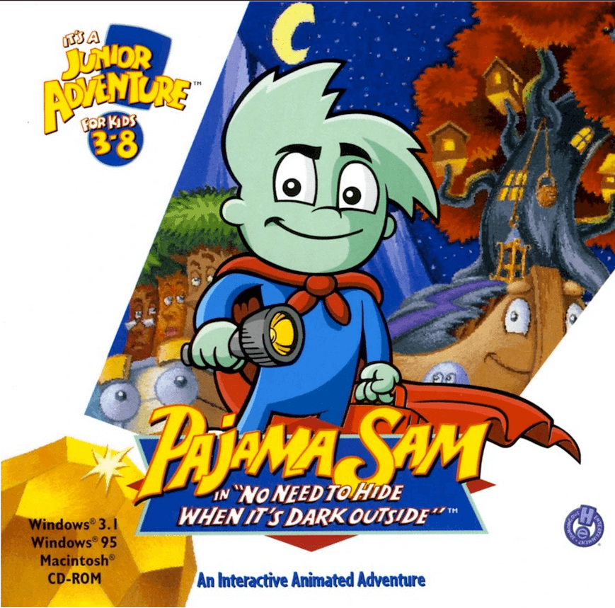
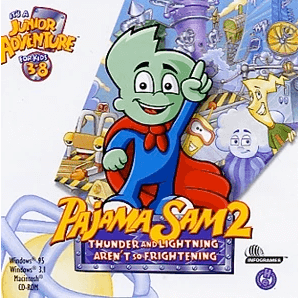
Pajama Sam 2: Thunder and Lightning aren't so Frightening
Released: 1998
The second installment of the Pajama Sam series. I strongly remember the board game minigame.
Pajama Sam 3: You Are What You Eat From Your Head To Your Feet
Released: 2000
The third installment of the Pajama Sam series. Has a strange "food and human organs" aesthetic that probably influenced me in some way.
If you like Pajama Sam (or you just like jazz and ska), you may be interested in the Remastered Soundtrack for Pajama Sam 3, which was released in 2021 and was performed by the same artists as the original.
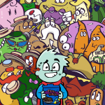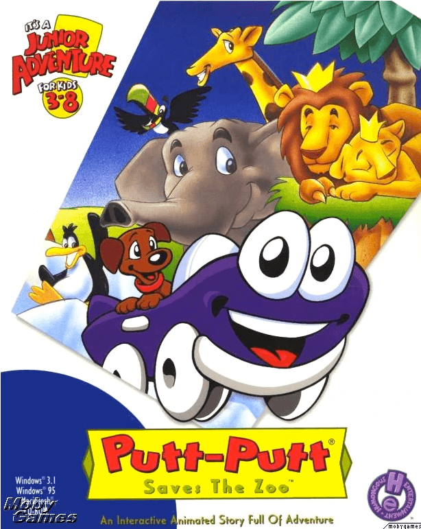
Putt-Putt Saves the Zoo
Released: 1995
The third installment of the Putt-Putt series. Fun and cute.
Putt-Putt Travels Through Time
Released: 1997
I got stuck and was never able to finish this one as a kid - Putt-Putt's dog Pep was too difficult for me to find.
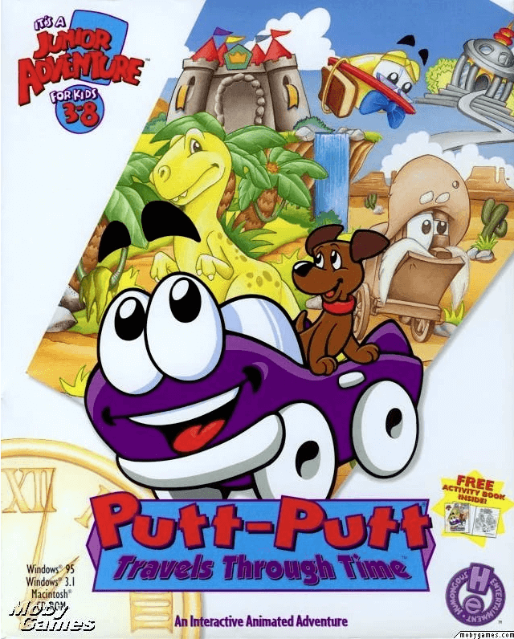
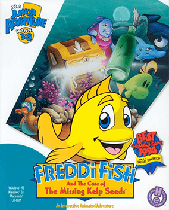
Freddi Fish and the Case of the Missing Kelp Seeds
Released: 1995
An edutainment game featuring Freddi Fish. She's the first female protagonist for H.E.'s games, though I'm not sure if I ever knew she was a girl. The seafloor was drawn accurately dark, which gives it a strange, desolate atmosphere.
Activity Centers
The Land Before Time Activity Center
Released: 1998
Publisher: Sound Source Interactive
Children's software with a variety of simple games and activities, including a 3D maze.
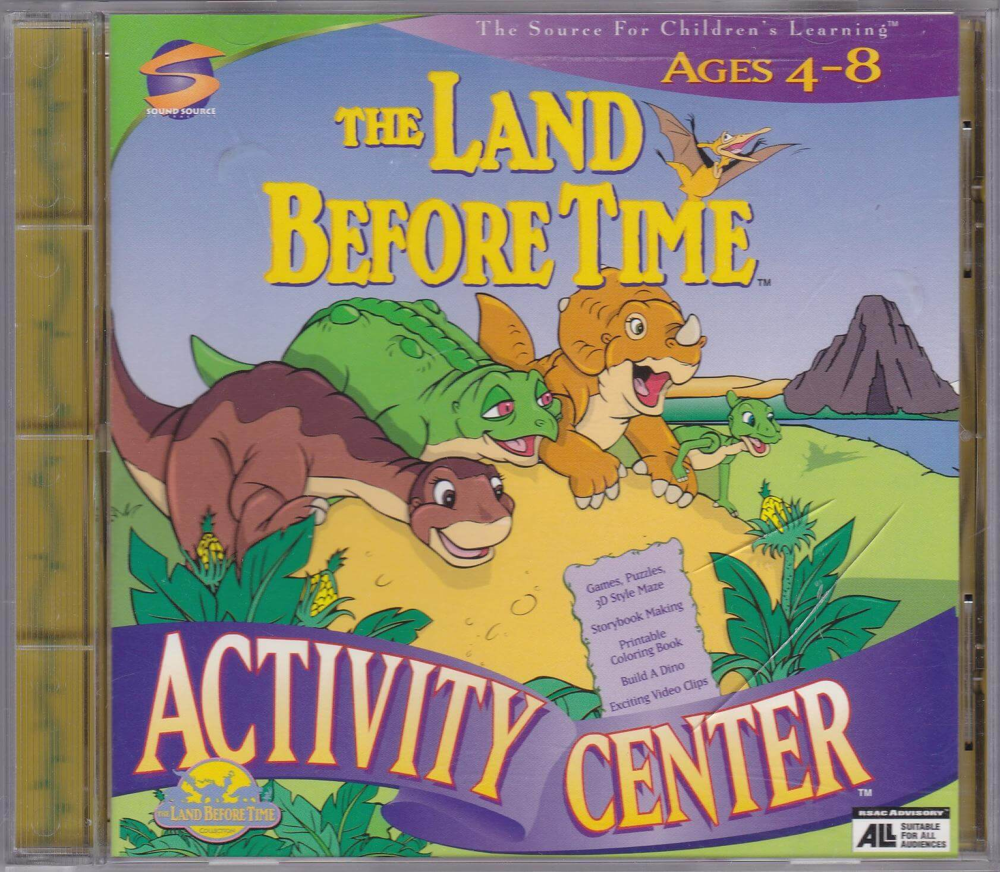
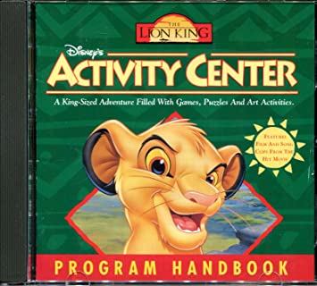
The Lion King Activity Center
Released: September 1995
Publisher: Disney Interactive
Activity center based on Disney's 1994 film The Lion King.
Disney's Dinosaur Activity Center
Released: July 2000
Publisher: Disney Interactive
Based on the 2000 CGI film Dinosaur. Has a variety of games and activites, including a dinosaur maker.
Baby Games
Tonka Construction
Released: 1996
Publisher: Hasbro Interactive
Let you print out certificates whenever you completed a minigame. Yes, I did print them.
Just Me and My Mom
Released: 1999
Publisher: Big Tuna New Media
A point-and-click interactive storybook.
Reader Rabbit's
Kindergarten
Released: 1997
Publisher: The Learning Company
A educational game with a item collecting subplot.
Reader Rabbit's
Math 1
Released: 1997
Publisher: The Learning Company
Simple math minigames. I remember the prize counter the most.